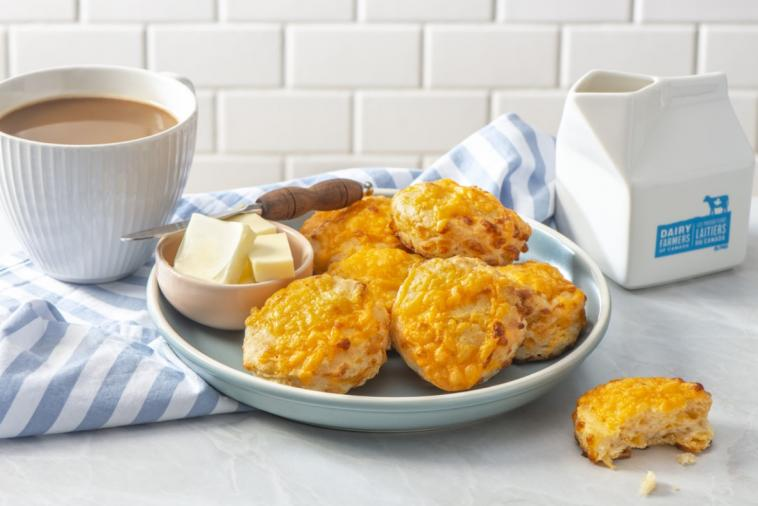

Scones

Ingredients
- 2 cups (500 mL) all-purpose flour
- 4 tsp (20 mL) baking powder
- 1/2 tsp (2 mL) salt
- 1/4 tsp (1 mL) cayenne pepper
- 1/4 cup (60 mL) cold Canadian butter
- 1 cup (250 mL) Canadian Old Cheddar or Canadian-Swiss cheese shredded
- 1 cup (250 mL) Canadian Milk
Cooking Instructions
- Preheat oven to 425 °F (220 °C).
- In large bowl, sift together flour, baking powder, salt and cayenne. Using pastry blender or 2 knives, cut in Canadian butter until mixture is crumbly. Stir in Canadian cheese. Pour in Canadian milk; stir with fork until soft, sticky dough forms.
- Turn out dough onto lightly floured surface and shape into 3/4-inch (2 cm) thick square. Cut into 2-inch (5 cm) squares or rounds and place, touching each other, on ungreased baking sheet.
Go Back